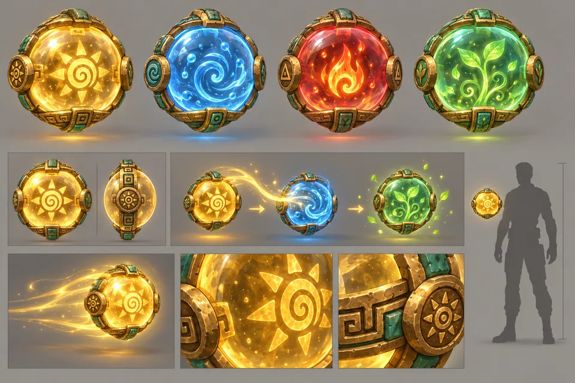
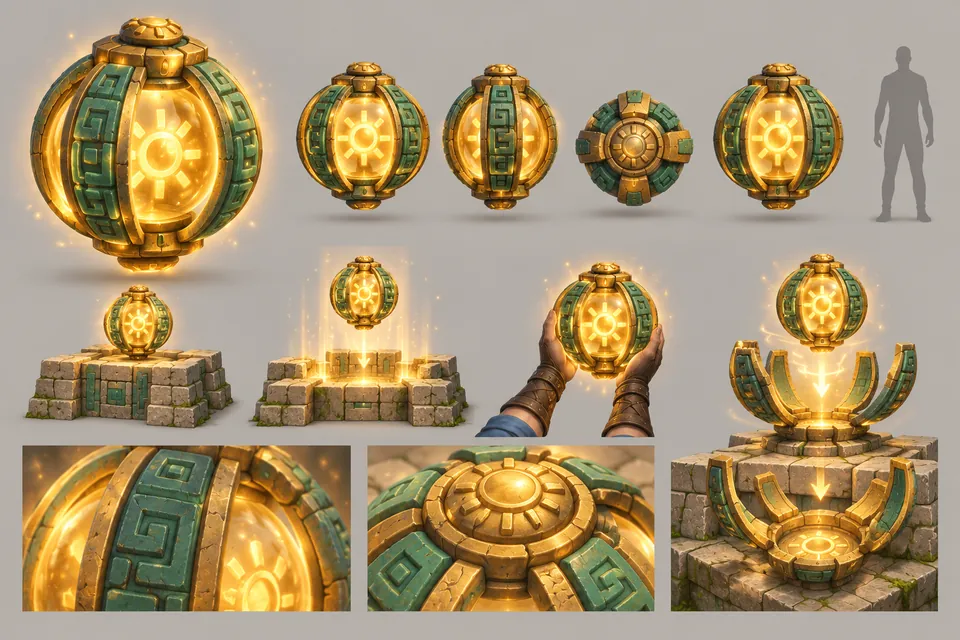
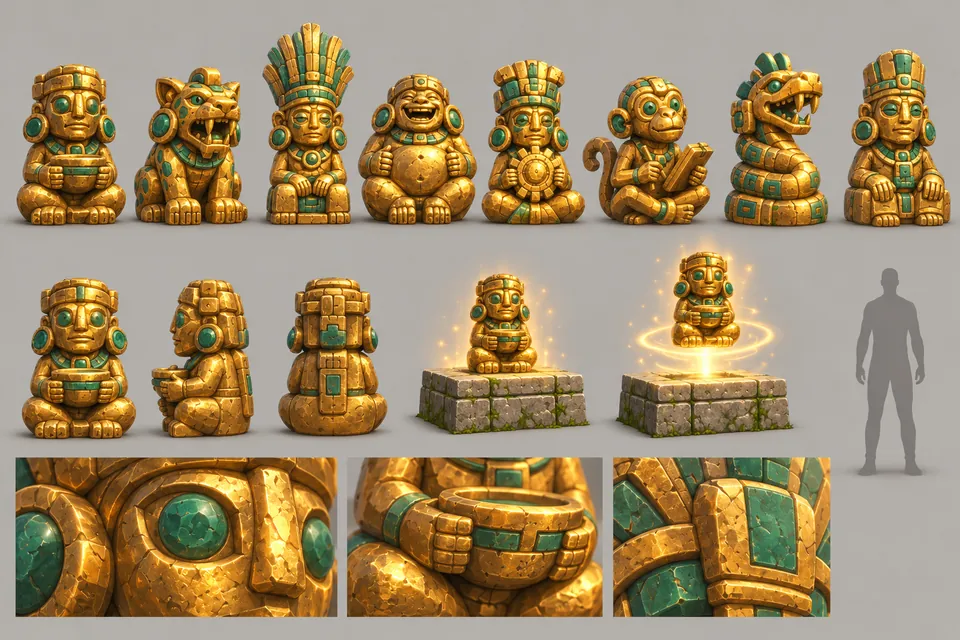
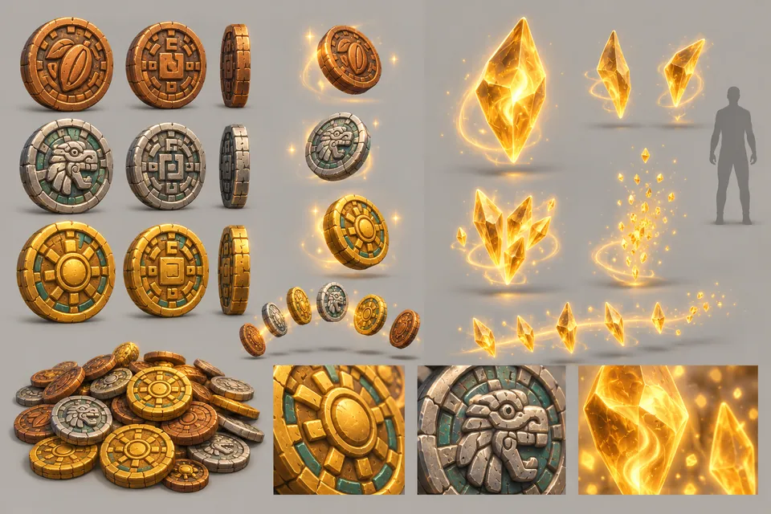
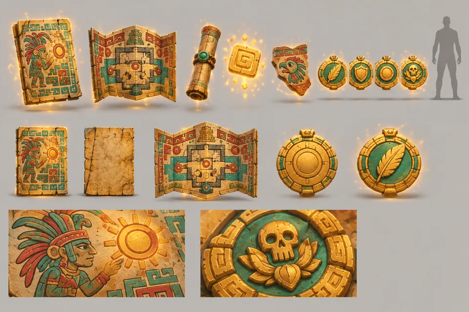

P01Bild folgt
P01
Ankunftsfeld
Rundes, gemeißeltes Teleportfeld: ruhend, aktiv und bei der Ankunft
Start / Kunst & Assets
Kunst & Assets
Felder, Platten, Türen, Fallen und Sammelobjekte, die alle Ebenen teilen.
Alles, worauf Kaya treten, was sie aufheben, lösen oder woran sie sich verletzen kann: zweiundzwanzig Blätter mit gemeinsamen Gameplay-Objekten.
P01
Rundes, gemeißeltes Teleportfeld: ruhend, aktiv und bei der Ankunft
P02
Eine Stele mit Sonnengesicht, die bei Berührung aufleuchtet
P03
Ein Tor mit Kragbogen, dessen Platte versinkt und einen goldenen Schleier freigibt
P04
Quadratische, Streifen-, Schwergewichts- und Stampfplatten; gedrückt und falsch
P05
Eine gleitende Relieftür und eine Energietür mit Kugelfassung im Jaguarmaul
P06
Fassungen aus gewölbten Händen, eine Wandfassung im Jaguarmaul und ein Glyphenring-Sockel

P07
Goldene Sonne, blaues Wasser, rotes Feuer und grünes Wachstum; Sonne in Wasser ergibt Wachstum

P08
Eine pro Ebene: eine goldene Kugel in einem Käfig aus Jade und Gold, der sich wie Blütenblätter öffnet

P09
Acht sammelbare sitzende Figuren, eine in jedem Raum versteckt

P10
Münzen aus Bronze, Silber und Gold sowie durchscheinende goldene Seelensplitter

P11
Codexseiten, Schriftrollen, Glyphenechos, Splitter und Prüfungsmedaillons
P12
Feste, gleitende, schwebende und Fährplattformen
P13
Stacheln mit Obsidianspitzen: eingefahren, warnend und ausgefahren
P14
Ein Feuerballspeier, ein Feuerstrahl und ein Pfeilkopf
P15
Eine kachelbare Feuergrube, Düsen mit Jaguarmaske und ein Düsenring
P16
Eine blauweiße Strahlenbarriere und ein goldenes Siegel, das sich auflöst
P17
Vier Glyphenfelder, die aufleuchten, sobald die Ziele eines Raums erfüllt sind
P18
Wandziele und ein Übungspfahl für das Blasrohr
P19
Intakt, ausgelöst, einstürzend und wieder erscheinend
P20
Durch grünes Leuchten angedeutet, von der Erdkugel zerschmettert
P21
Ein rollender Felsbrocken, eine Auslöserutsche, ein schiebbarer Felsbrocken und eine Gewichtsplatte
P22
Nischen, Grabbänke und Sarkophage, aus denen sich Wächter erheben